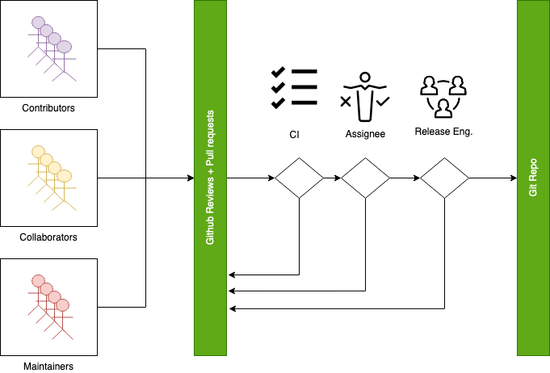
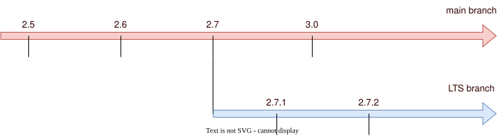
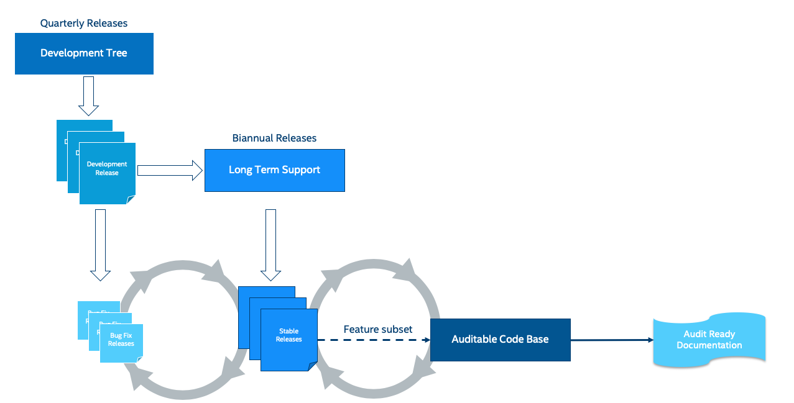

Release Process
The Zephyr project releases on a time-based cycle, rather than a feature-driven one. Zephyr releases represent an aggregation of the work of many contributors, companies, and individuals from the community.
A time-based release process enables the Zephyr project to provide users with a balance of the latest technologies and features and excellent overall quality. A roughly 6-month release cycle allows the project to coordinate development of the features that have actually been implemented, allowing the project to maintain the quality of the overall release without delays because of one or two features that are not ready yet.
Each release period will consist of a development phase followed by a stabilization phase. Release candidates will be created during the stabilization phase.
{kind=link}
Release Cycle
Note
The milestones for the current major version can be found on the Official GitHub Wiki. Information on previous releases can be found here.
Development Phase
A relatively straightforward discipline is followed with regard to the merging of patches for each release. At the beginning of each development cycle, the main branch is said to be open for development. At that time, code which is deemed to be sufficiently stable (and which is accepted by the maintainers and the wide community) is merged into the mainline tree. The bulk of changes for a new development cycle (and all of the major changes) will be merged during this time.
The development phase lasts for approximately five months. At the end of this time, the release owner will declare that the development phase is over and releases the first of the release candidates. For the codebase release which is destined to be 3.1.0, for example, the release which happens at the end of the development phase will be called 3.1.0-rc1. The -rc1 release is the signal that the time to merge new features has passed, and that the time to stabilize the next release of the code base has begun.
Stabilization Phase
Over the following weeks and depending on the release milestone, only stabilization, cosmetic updates, bug fixes, documentation improvements, and new tests for existing features are permitted. (See table below).
On occasion, more significant changes and new features will be allowed, but such occasions are rare and require a TSC approval and a justification. As a general rule, if you miss submitting your code during the development phase for a given feature, the best thing to do is to wait for the next development cycle. (An occasional exception is made for drivers for previously unsupported hardware; if they do not touch any other in-tree code, they cannot cause regressions and should be safe to add at any time).
As fixes make their way into the mainline, the patch rate will slow over time. The mainline release owner releases new -rc drops once or twice a week; a normal series will get up to somewhere between -rc4 and -rc6 before the code base is considered to be sufficiently stable and the release criteria have been achieved at which point the final 3.1.0 release is made.
At that point, the whole process starts over again.
Merge Criteria
{kind=link}

All PR Requirements must be met.
Minimal of 2 approvals, including an approval by the designated assignee.
Pull requests should be reviewed by at least a maintainer or collaborator of each affected area; Unless the changes to a given area are considered trivial enough, in which case approvals by other affected subsystems maintainers/collaborators would suffice.
Four eye principle on the organisation level. We already require at least 2 approvals (basic four eye principle), however, such reviews and approvals might be unintentionally biased in the case where the submitter is from the same organisation as the approvers. To allow for project wide review and approvals, the merge criteria is extended with the guidelines below:
Changes or additions to common and shared code shall have approvals from different organisations (at least one approval from an organisation different than the submitters’). Common and shared code is defined as anything that does not fall under
soc,boardsanddrivers/*/*.Changes or additions to hardware support (driver, SoC, boards) shall at least have the merger be from a different organisation. This applies only to implementation of an API supporting vendor specific hardware and not the APIs.
Release engineers may make exceptions for areas with contributions primarily coming from one organisation and where reviews from other organisations are not possible, however, merges shall be completed by a person from a different organisation. In such cases, the minimum review period of at least 2 days shall be strictly followed to allow for additional reviews.
Release engineers shall not merge code changes originating and reviewed only by their own organisation. To be able to merge such changes, at least one review shall be from a different organisation.
A minimum review period of 2 business days, 4 hours for trivial changes (see Give reviewers time to review before code merge).
Hotfixes can be merged at any time after CI has passed and are excluded from most of the conditions listed above.
All required checks are passing:
Device Tree
Documentation
Code linters (Gitlint, Pylint, Ruff, Sphinx, etc.)
Identity/Emails
Kconfig
License checks
Checkpatch (Coding Style)
Integration Tests (Via twister) on emulation/simulation platforms
Simulated Bluetooth Tests
Release Criteria
The main motivation is to clearly have the criteria in place that must be met for a release. This will help define when a release is “done” in terms that most people can understand and in ways that help new people to understand the process and participate in creating successful releases:
The release criteria documents all the requirements of our target audience for each Zephyr release
The target audiences for each release can be different, and may overlap
The criteria at any given time are not set in stone: there may be requirements that have been overlooked, or that are new, and in these cases, the criteria should be expanded to ensure all needs are covered.
Below is the high level criteria to be met for each release:
No blocker bugs / blocking issues
All relevant tests shall pass on
Tier 0platformsAll relevant tests shall pass on Tier 0 and 1 platforms (at least 1 per architecture/architecture variant/Hardware features)
All applicable samples/tests shall build on Tiers 0, 1 and 2
All high and critical static analysis and security issues addressed
Release Notes are up-to-date.
Blocker Bugs
Blocker bug process kicks in during the release process and is in effect after the feature freeze milestone. An issue labeled as a blocker practically blocks a release from happening. All blocker bugs shall be resolved before a release is created.
A fix for a bug that is granted blocker status can be merged to ‘main’ and included in
the release all the way until the final release date.
Bugs of moderate severity and higher that have impact on all users are typically the candidates to be promoted to blocker bugs
Contributors and member of the release engineering team shall follow these guidelines for release blocker bugs:
Only mark bugs as blockers if the software (Zephyr) must not be released with the bug present.
All collaborators can add or remove blocking labels.
Evaluate bugs as potential blockers based on their severity and prevalence.
Provide detailed rationale whenever adding or removing a blocking label.
Ensure all blockers have the milestone tagged.
Release managers have final say on blocking status; contact them with any questions.
Release Milestones
Timeline |
Checkpoint |
Description |
Owner |
|---|---|---|---|
T-5M |
Planning |
Finalize dates for release, Assign release owner and agree on project wide goals for this release. |
TSC |
T-7W |
Review target milestones |
Finalize target milestones for features in flight. |
Release Engineering |
T-5W |
Release Announcement |
Release owner announces feature freeze and timeline for release. |
Release Manager |
T-4W |
Release Timeline reminder |
Release owner sends a reminder of the feature freeze and timeline for release. |
Release Manager |
T-3W |
Feature Freeze (RC1) |
After RC1, no new features may be introduced. Only stabilization, cosmetic updates, bug fixes, documentation improvements, and new tests for existing features are permitted. |
Release Engineering |
T-2W |
2nd Release Candidate |
No new features after RC2, ONLY stabilization and cosmetic changes, bug and doc fixes are allowed. |
Release Manager |
T-1W |
Hard Freeze (RC3) |
Only blocker bug fixes after RC3, documentation improvements and changes to release notes are allowed. Release notes need to be complete by this checkpoint. Release Criteria is met. |
Release Manager |
T-0W |
Release |
Release Manager |
Releases
Long Term Support (LTS)
Long-term support releases are designed to be supported and maintained for an extended period and are the recommended release for products and the auditable branch used for certification.
An LTS release is defined as:
Product focused
Extended Stabilisation period: Allow for more testing and bug fixing
Stable APIs
Quality Driven Process
Long Term: Maintained for an extended period of time (at least 5 years).
Product Focused
Zephyr LTS is the recommended release for product makers with an extended support and maintenance which includes general stability and bug fixes, security fixes.
An LTS includes both mature and new features. API and feature maturity is documented and tracked. The footprint and scope of mature and stable APIs expands as we move from one LTS to the next giving users access to bleeding edge features and new hardware while keeping a stable foundation that evolves over time.
Extended Stabilisation Period
Zephyr LTS development cycle differs from regular releases and has an extended stabilization period. Feature freeze of regular releases happens 3-4 weeks before the scheduled release date. The stabilization period for LTS is extended by 3 weeks with the feature freeze occurring 6-7 weeks before the anticipated release date. The time between code freeze and release date is extended in this case.
Stable APIs
Zephyr LTS provides a stable and long-lived foundation for developing products. To guarantee stability of the APIs and the implementation of such APIs it is required that any release software that makes the core of the OS went through the Zephyr API lifecycle and stabilized over at least 2 releases. This guarantees that we release many of the highlighted and core features with mature and well-established implementations with stable APIs that are supported during the lifetime of the release LTS.
API Freeze (LTS - 2)
All stable APIs need to be frozen 2 releases before an LTS. APIs can be extended with additional features, but the core implementation is not modified. This is valid for the following subsystems for example:
Device Drivers (i2c.h, spi.h)…
Kernel (k_*):
OS services (logging,debugging, ..)
DTS: API and bindings stability
Kconfig
New APIs for experimental features can be added at any time as long as they are standalone and documented as experimental or unstable features/APIs.
Feature Freeze (LTS - 1) - No new features or overhaul/restructuring of code covering major LTS features.
Kernel + Base OS
Additional advertised LTS features
Auxiliary features on top of and/or extending the base OS and advertised LTS features can be added at any time and should be marked as experimental if applicable
Quality Driven Process
The Zephyr project follows industry standards and processes with the goal of providing a quality oriented releases. This is achieved by providing the following products to track progress, integrity and quality of the software components provided by the project:
Compliance with published coding guidelines, style guides and naming conventions and documentation of deviations.
Static analysis reports
Regular static analysis on the complete tree using available commercial and open-source tools, and documentation of deviations and false positives.
Documented components and APIS
Requirements Catalog
Verification Plans
Verification Reports
Coverage Reports
Requirements Traceability Matrix (RTM)
SPDX License Reports
Each release is created with the above products to document the quality and the state of the software when it was released.
Long Term Support and Maintenance
LTS releases are published every 2.5 to 3 years and are branched and maintained independently from the main tree for approximately 5 years after they were released.
Support is provided in three main phases:
Phase 1 (first 2 years): General bug fixes and security fixes, including platform and driver fixes.
Phase 2 (following 3+ years): Security and OS stability fixes only.
Phase 3: Extended support may be available through third parties (details to be determined).
Support for a given LTS release (LTS N) continues until the initial release of the LTS two versions ahead (LTS N+2). A final release of LTS N occurs shortly after the initial release of LTS N+2.
The list of currently supported LTS releases and their EOL dates can be found here.
{kind=link}

Long Term Support Release
Changes and fixes flow in both directions. However, changes from main branch to an LTS branch will be limited to fixes that apply to both branches and for existing features only.
All fixes for an LTS branch that apply to the mainline tree shall be submitted to mainline tree as well.
Auditable Code Base
An auditable code base is to be established from a defined subset of Zephyr OS features and will be limited in scope. The LTS, development tree, and the auditable code bases shall be kept in sync after the audit branch is created, but with a more rigorous process in place for adding new features into the audit branch used for certification.
This process will be applied before new features move into the auditable code base.
The initial and subsequent certification targets will be decided by the Zephyr project governing board.
Processes to achieve selected certification will be determined by the Security and Safety Working Groups and coordinated with the TSC.
Host Tools Support Policy
Python Version Policy
Zephyr tracks the Python upstream release schedule when determining its minimum supported Python version.
The minimum supported version is selected to balance long-term support and practical availability in mainstream, actively supported Linux distributions (e.g. current Ubuntu LTS and Debian Stable releases).
A Python version is considered for removal when:
It is approaching or has reached upstream end-of-life (EOL), and
Newer Python versions are broadly available in current, actively supported major Linux distributions.
Hardware Support Tiers
Tier 0: Emulation Platforms
Tests are both built and run in these platforms in CI, and therefore runtime failures can block Pull Requests.
Supported by the Zephyr project itself, commitment to fix bugs in releases.
One Tier 0 platform is required for each new architecture.
Bugs reported against platforms of this tier are to be evaluated and treated as a general bug in Zephyr and should be dealt with the highest priority.
Tier 1: Supported Platforms
Commitment from a specific team to run tests using twister device testing for the “Zephyr compatibility test suite” (details TBD) on a regular basis using open-source and publicly available drivers.
Commitment to fix bugs in time for releases. Not supported by “Zephyr Project” itself.
General availability for purchase
Bugs reported against platforms of this tier are to be evaluated and treated as a general bug in Zephyr and should be dealt with medium to high priority.
Tier 2: Community Platforms
Platform implementation is available in upstream, no commitment to testing, may not be generally available.
Has a dedicated maintainer who commits to respond to issues / review patches.
Bugs reported against platforms of this tier are NOT considered as a general bug in Zephyr.
Tier 3: Deprecated and unsupported Platforms
Platform implementation is available, but no owner or unresponsive owner.
No commitment to support is available.
May be removed from upstream if no one works to bring it up to tier 2 or better.
Bugs reported against platforms of this tier are NOT considered as a general bug in Zephyr.
Release Procedure
This section documents the Release manager responsibilities so that it serves as a knowledge repository for Release managers.
Release Checklist
Each release has a GitHub issue associated with it that contains the full checklist. After a release is complete, a checklist for the next release is created.
Tagging
The following syntax should be used for releases and tags in Git:
Release [Major].[Minor].[Patch Level]
Release Candidate [Major].[Minor].[Patch Level]-rc[RC Number]
Tagging:
v[Major].[Minor].[Patch Level]-rc[RC Number]
v[Major].[Minor].[Patch Level]
v[Major].[Minor].99 - A tag applied to main branch to signify that work on v[Major].[Minor+1] has started. For example, v1.7.99 will be tagged at the start of v1.8 process. The tag corresponds to VERSION_MAJOR/VERSION_MINOR/PATCHLEVEL macros as defined for a work-in-progress main branch version. Presence of this tag allows generation of sensible output for “git describe” on main branch, as typically used for automated builds and CI tools.
{kind=link}

Zephyr Code and Releases
The final release and each release candidate shall be tagged using the following steps:
Note
Tagging needs to be done via explicit git commands and not via GitHub’s release
interface. The GitHub release interface does not generate annotated tags (it
generates ‘lightweight’ tags regardless of release or pre-release). You should
also upload your gpg public key to your GitHub account, since the instructions
below involve creating signed tags. However, if you do not have a gpg public
key you can opt to remove the -s option from the commands below.
Note
This section uses tagging 1.11.0-rc1 as an example, replace with the appropriate release candidate version.
Update the version variables in the VERSION file located in the root of the Git repository to match the version for this release candidate. The
EXTRAVERSIONvariable is used to identify the rc[RC Number] value for this candidate:EXTRAVERSION = rc1
Post a PR with the updated VERSION file using
release: Zephyr 1.11.0-rc1as the commit subject. Merge the PR after successful CI.Tag and push the version, using an annotated tag:
$ git pull $ git tag -s -m "Zephyr 1.11.0-rc1" v1.11.0-rc1
Verify that the tag has been signed correctly,
git showfor the tag must contain a signature (look for theBEGIN PGP SIGNATUREorBEGIN SSH SIGNATUREmarker in the output):$ git show v1.11.0-rc1
Push the tag:
$ git push git@github.com:zephyrproject-rtos/zephyr.git v1.11.0-rc1
Send an email to the mailing lists (
announceanddevel) with a link to the release
Note
This section uses tagging 1.11.0 as an example, replace with the appropriate final release version.
When all final release criteria has been met and the final release notes have been approved and merged into the repository, the final release version will be set and repository tagged using the following procedure:
Update the version variables in the VERSION file located in the root of the Git repository. Set
EXTRAVERSIONvariable to an empty string to indicate final release:EXTRAVERSION =
Post a PR with the updated VERSION file using
release: Zephyr 1.11.0as the commit subject. Merge the PR after successful CI.Tag and push the version, using two annotated tags:
$ git pull $ git tag -s -m "Zephyr 1.11.0" v1.11.0
Verify that the tag has been signed correctly,
git showfor the tag must contain a signature (look for theBEGIN PGP SIGNATUREorBEGIN SSH SIGNATUREmarker in the output):$ git show v1.11.0
Push the tag:
$ git push git@github.com:zephyrproject-rtos/zephyr.git v1.11.0
Find the new
v1.11.0tag at the top of the releases page and edit the release with theEdit tagbutton with the following:Copy the overview of
docs/releases/release-notes-1.11.rstinto the release notes textbox and link to the full release notes file on docs.zephyrproject.org.
Send an email to the mailing lists (
announceanddevel) with a link to the release